X19¶
CLAWSON POINT
clawson_point(A, B, C) -> X_19 • Lemoine (1886) • Clawson (1925) • Kimberling X(19) • Search Value \((6, 9, 13)\): \(- \frac{248 \sqrt{35}}{991} \approx -1.480512397789\)
X19 (CLAWSON POINT) constructed at X19 = \(\left(\frac{497}{106},\; \frac{196}{53}\right)\) in exact rational coordinates on the Heronian reference triangle \((a, b, c) = (15, 13, 14)\) over \(\mathbb{Q}\) with vertices A = \((0, 0)\), B = \((14, 0)\), C = \((5, 12)\), and area \(\Delta = 84\). Switch tabs above to inspect exact constructions on Right \((3, 4, 5)\), Kepler \((1, \sqrt{\phi}, \phi)\), and Kimberling \((6, 9, 13)\).¶
Constructed Elements
Derived Triangle: Orthic Triangle △HaHbHc — vertices Ha, Hb, Hc (Pedal triangle of Orthocenter X4 (altitude feet))
Derived Triangle: Cevian Triangle △PaPbPc — vertices Pa, Pb, Pc (Traces of cevians through target center on BC, CA, AB)
Concurrence Lines (Cevians): A–Pa, B–Pb, C–Pc concurring at X19
Homogeneous Coordinates & Exact Invariants¶

Homogeneous Coordinates of X19 on Heronian \((15, 13, 14)\): orthogonal trilinear struts \((\alpha, \beta, \gamma)\) and signed barycentric sub-triangles \((\Delta_a, \Delta_b, \Delta_c)\).¶
Trilinear Coordinates (\(\alpha : \beta : \gamma = 99 : 55 : 70\)): Dropping orthogonal perpendiculars X19Ta, X19Tb, and X19Tc from X19 to sidelines BC, CA, and AB meets the sides at right-spread pedal feet Ta = \(\left(\frac{23513}{2650},\; \frac{9058}{1325}\right)\), Tb = \(\left(\frac{2765}{1378},\; \frac{3318}{689}\right)\), and Tc = \(\left(\frac{497}{106},\; 0\right)\). The orthogonal strut lengths on \((15, 13, 14)\) are \(d_a = \frac{1386}{265}\), \(d_b = \frac{154}{53}\), and \(d_c = \frac{196}{53}\), reducing to homogeneous trilinears \(\alpha : \beta : \gamma = 99 : 55 : 70\).
Barycentric Coordinates (\(u : v : w = 297 : 143 : 196\)): Joining X19 to the vertices along X19A, X19B, and X19C forms signed sub-triangles △X19BC, △X19CA, and △X19AB of exact signed areas \(\Delta_a = \frac{2079}{53}\), \(\Delta_b = \frac{1001}{53}\), and \(\Delta_c = \frac{1372}{53}\) (summing to \(\Delta_a + \Delta_b + \Delta_c = 84 = \Delta\)), in homogeneous ratio \(u : v : w = 297 : 143 : 196\).
Reference Triangle |
Field |
Cartesian \((x, y)\) |
Trilinears \(\alpha : \beta : \gamma\) |
Barycentrics \(u : v : w\) |
Sub-Areas \((\Delta_a, \Delta_b, \Delta_c)\) |
Directed Trilinear \((d_a,\, Q_a)\) |
|---|---|---|---|---|---|---|
Heronian \((15, 13, 14)\) |
\(\mathbb{Q}\) |
\(\left(\frac{497}{106},\; \frac{196}{53}\right)\) |
\(99 : 55 : 70\) |
\(297 : 143 : 196\) |
\(\left(\frac{2079}{53},\; \frac{1001}{53},\; \frac{1372}{53}\right)\) |
\(\frac{1386}{265}\; (Q_a = \frac{1920996}{70225})\) |
Right \((3, 4, 5)\) |
\(\mathbb{Q}\) |
\(\left(\frac{16}{5},\; \frac{12}{5}\right)\) |
\(0 : 0 : 1\) |
\(0 : 0 : 1\) |
\(\left(0,\; 0,\; 6\right)\) |
\(0\; (Q_a = 0)\) |
Kepler \((1, \sqrt{\phi}, \phi)\) |
\(\mathbb{Q}(\sqrt{\phi})\) |
\(\left(1,\; \sqrt{\phi} \left(\phi - 1\right)\right)\) |
\(0 : 0 : 1\) |
\(0 : 0 : 1\) |
\(\left(0,\; 0,\; \frac{\sqrt{\phi}}{2}\right)\) |
\(0\; (Q_a = 0)\) |
Kimberling \((6, 9, 13)\) |
\(\mathbb{Q}(\sqrt{35})\) |
\(\left(\frac{96086}{12883},\; \frac{13268 \sqrt{35}}{12883}\right)\) |
\(-806 : -1391 : 3317\) |
\(-372 : -963 : 3317\) |
\(\left(- \frac{744 \sqrt{35}}{991},\; - \frac{1926 \sqrt{35}}{991},\; \frac{6634 \sqrt{35}}{991}\right)\) |
\(- \frac{248 \sqrt{35}}{991}\; (Q_a = \frac{2152640}{982081})\) |
Alternate Coordinates5 forms
Trilinears: \(\sin 2B + \sin 2C - \sin 2A : :\)
Trilinears: \(1/(b^{2} + c^{2} - a^{2}) : :\)
Trilinears: \(a^{2} - S^{2} + S_{A} : :\)
Trilinears: \(S_{B} S_{C} : :\)
Barycentrics: \(a \tan A : b \tan B : c \tan C\)
Linear Combinations2 combinations
X19 = \((r + 2R - s)(r + 2R + s)\) X1 - \(6R(r + 2R)\) X2 - \(2(r^{2} + 2rR - s^{2})\) X3 (Peter Moses, April 2, 2013)
X19 = \(3\) X2 + X20061, \(6\) X2 - \(5\) X31261, \(2\) X3 - \(3\) X21160, \(2\) X4329 - \(3\) X31158, \(2\) X4329 - \(5\) X31261, \(2\) X18589 + X20061, \(4\) X18589 - \(3\) X31158, \(4\) X18589 - \(5\) X31261, \(2\) X20061 + \(3\) X31158, \(2\) X20061 + \(5\) X31261, \(3\) X21160 - X30265, \(3\) X31158 - \(5\) X31261
Incident Central Lines¶
Principal Central Lines Through X19 on Heronian \((15, 13, 14)\).¶
Orthocenter–Mittenpunkt–Spieker Axis {4, 9, 10, 19} — collinear axis through X4 (Orthocenter, \(\left(5,\; \frac{15}{4}\right)\)), X9 (Mittenpunkt, \(\left(\frac{973}{146},\; \frac{294}{73}\right)\)), X10 (Spieker Center, \(\left(\frac{13}{2},\; 4\right)\)), X19, with exact Cartesian equation \(2 x - 12 y + 35 = 0\) (spread \(\frac{1}{37}\) relative to AB).
Incenter–Cevapoint Of X19 And X25 Central Line {1, 19, 28} — collinear axis through X1 (Incenter, \(\left(6,\; 4\right)\)), X19, X28 (Cevapoint Of X19 And X25, \(\left(\frac{431}{95},\; \frac{348}{95}\right)\)), with exact Cartesian equation \(32 x - 139 y + 364 = 0\) (spread \(\frac{1024}{20345}\) relative to AB).
Symmedian Point–-Beth Conjugate Of X4 Central Line {6, 19, 34} — collinear axis through X6 (Symmedian Point, \(\left(\frac{1673}{295},\; \frac{1176}{295}\right)\)), X19, X34 (-Beth Conjugate Of X4, \(\left(\frac{446}{109},\; \frac{384}{109}\right)\)), with exact Cartesian equation \(184 x - 627 y + 1456 = 0\) (spread \(\frac{33856}{426985}\) relative to AB).
X19 lies on the 2nd Lester circle (Yiu), the cubics K109, K145, K175, K343, K391, K431, K445, K457, K605, K678, K696, K697, K750, K864, K968, K999, K1039, K1042, K1090, the curve Q121.
Full Incident Central Line Catalog395 lines
{1, 28}, {2, 534}, {3, 1871}, {4, 9}, {5, 8141}, {6, 34}, {7, 5236}, {8, 1891}, {21, 4288}, {24, 2337}, {25, 33}, {27, 63}, {29, 5250}, {30, 15940}, {31, 204}, {32, 5336}, {35, 14017}, {38, 4211}, {41, 1825}, {44, 1828}, {45, 1900}, {46, 579}, {47, 921}, {51, 3611}, {52, 6237}, {53, 1846}, {54, 16031}, {56, 207}, {57, 196}, {64, 1903}, {77, 2002}, {81, 969}, {84, 3183}, {86, 14013}, {91, 920}, {100, 7466}, {101, 913}, {102, 282}, {107, 2249}, {108, 2291}, {109, 8775}, {112, 759}, {113, 12661}, {117, 5190}, {125, 10119}, {143, 32158}, {155, 12417}, {158, 1712}, {162, 897}, {163, 563}, {165, 2954}, {184, 10536}, {185, 6254}, {186, 16553}, {191, 31902}, {200, 3949}, {208, 225}, {216, 27622}, {219, 517}, {220, 1902}, {226, 1763}, {232, 444}, {264, 21371}, {269, 3942}, {270, 2363}, {273, 653}, {275, 19181}, {294, 1041}, {297, 25978}, {307, 24316}, {318, 1840}, {326, 1958}, {331, 10030}, {346, 3610}, {347, 24604}, {355, 7511}, {378, 7688}, {379, 1441}, {381, 18453}, {403, 7110}, {406, 5257}, {407, 1865}, {418, 26908}, {423, 2905}, {427, 3925}, {428, 5101}, {429, 1213}, {469, 3305}, {475, 5750}, {484, 5146}, {487, 12662}, {488, 12663}, {511, 15975}, {518, 5781}, {523, 14119}, {560, 1910}, {577, 1950}, {583, 2969}, {587, 3536}, {594, 5090}, {596, 14964}, {604, 909}, {614, 3162}, {648, 18827}, {649, 3064}, {650, 2432}, {656, 8768}, {662, 8771}, {672, 1851}, {774, 2155}, {775, 4100}, {798, 24006}, {800, 1945}, {823, 1821}, {846, 17038}, {851, 18591}, {876, 2489}, {908, 28807}, {911, 17463}, {960, 965}, {962, 27382}, {990, 3220}, {993, 4227}, {1013, 35258}, {1024, 7649}, {1030, 20832}, {1039, 2298}, {1040, 4224}, {1075, 7554}, {1086, 28017}, {1100, 11396}, {1104, 3172}, {1109, 2157}, {1122, 2097}, {1125, 7521}, {1158, 1715}, {1174, 2266}, {1212, 1593}, {1214, 11347}, {1247, 2959}, {1319, 37519}, {1333, 2217}, {1334, 28076}, {1350, 5784}, {1375, 17073}, {1405, 1866}, {1422, 7099}, {1423, 3512}, {1449, 1870}, {1457, 22063}, {1460, 7337}, {1461, 34492}, {1482, 20818}, {1572, 2300}, {1580, 17891}, {1581, 1740}, {1598, 1872}, {1604, 11399}, {1609, 2164}, {1611, 3290}, {1621, 4233}, {1633, 1721}, {1659, 3068}, {1698, 5142}, {1699, 9572}, {1707, 1719}, {1708, 1713}, {1709, 8558}, {1743, 1783}, {1745, 23619}, {1759, 21061}, {1773, 13161}, {1802, 2324}, {1830, 2246}, {1831, 2268}, {1836, 1901}, {1837, 1852}, {1843, 2876}, {1847, 10509}, {1857, 2357}, {1862, 6154}, {1864, 17810}, {1877, 2347}, {1878, 5183}, {1883, 17369}, {1944, 10446}, {1964, 2186}, {1966, 18832}, {1968, 16968}, {1969, 3403}, {1974, 16972}, {1986, 7724}, {1990, 2160}, {2128, 2129}, {2148, 2190}, {2156, 17871}, {2159, 3708}, {2166, 3376}, {2192, 7007}, {2194, 2219}, {2195, 2212}, {2203, 2214}, {2204, 2218}, {2207, 2281}, {2215, 8747}, {2255, 7151}, {2256, 3057}, {2258, 3192}, {2267, 30503}, {2273, 9620}, {2278, 17443}, {2287, 3869}, {2290, 2962}, {2305, 2652}, {2313, 9251}, {2319, 3186}, {2321, 17742}, {2326, 13739}, {2578, 2588}, {2579, 2589}, {2809, 8271}, {2822, 5667}, {2911, 21853}, {2960, 4877}, {3059, 7716}, {3060, 11445}, {3062, 10859}, {3069, 6203}, {3091, 9537}, {3144, 34920}, {3169, 34895}, {3174, 16550}, {3176, 10396}, {3189, 7718}, {3199, 21796}, {3207, 11363}, {3211, 24474}, {3219, 6994}, {3247, 4262}, {3306, 16706}, {3330, 7355}, {3333, 22088}, {3400, 3408}, {3401, 3409}, {3402, 3404}, {3462, 7344}, {3497, 3500}, {3567, 11460}, {3574, 32370}, {3575, 6253}, {3576, 7501}, {3589, 5834}, {3666, 15509}, {3683, 11323}, {3692, 5174}, {3694, 5687}, {3729, 20602}, {3731, 4222}, {3772, 16318}, {3811, 22021}, {3875, 31906}, {3877, 17519}, {3958, 12526}, {4063, 17924}, {4183, 4512}, {4194, 5296}, {4200, 5749}, {4209, 7131}, {4212, 17754}, {4228, 20243}, {4254, 11398}, {4295, 5746}, {4320, 17807}, {4327, 22769}, {4360, 31910}, {4361, 5792}, {4384, 16566}, {4394, 6591}, {4429, 5125}, {4466, 18634}, {5095, 32277}, {5130, 17275}, {5155, 17330}, {5200, 13427}, {5248, 25081}, {5282, 7102}, {5292, 34266}, {5322, 10829}, {5412, 5415}, {5413, 5416}, {5437, 17917}, {5521, 20623}, {5739, 8896}, {5742, 26066}, {5747, 12047}, {5776, 6001}, {5778, 5887}, {5802, 18391}, {5813, 28739}, {5829, 5880}, {5928, 13567}, {6059, 7083}, {6152, 6255}, {6180, 34371}, {6252, 6291}, {6404, 6406}, {6763, 31901}, {7017, 17787}, {7054, 11101}, {7190, 18162}, {7282, 8545}, {7350, 7351}, {7359, 12699}, {7412, 10268}, {7498, 31435}, {7534, 26921}, {7537, 8227}, {7559, 7989}, {7714, 34607}, {7982, 22356}, {7994, 14493}, {8148, 22147}, {8539, 8541}, {8743, 16470}, {8897, 18134}, {9310, 17452}, {9786, 12664}, {9817, 33849}, {10222, 23073}, {10311, 10315}, {10436, 15149}, {10476, 22065}, {10636, 10641}, {10637, 10642}, {10977, 33630}, {10985, 10988}, {11341, 20172}, {11433, 18921}, {12135, 17299}, {12329, 21867}, {13041, 13051}, {13042, 13052}, {14543, 17220}, {14557, 34048}, {14953, 17134}, {15344, 28847}, {16502, 20227}, {16551, 20367}, {16571, 17799}, {16572, 34498}, {16747, 32092}, {16814, 17516}, {17151, 31918}, {17465, 34080}, {17747, 28070}, {17861, 21364}, {17904, 20083}, {18163, 18677}, {18206, 31919}, {18344, 23351}, {18650, 24683}, {18679, 27659}, {18691, 20902}, {19213, 19214}, {19215, 19218}, {19216, 19217}, {19298, 19300}, {19299, 19301}, {19302, 21773}, {19432, 19446}, {19433, 19447}, {20258, 24334}, {20266, 21621}, {20291, 31015}, {20305, 24682}, {21368, 26665}, {21442, 24587}, {21770, 34434}, {22124, 34040}, {22127, 35631}, {22840, 22970}, {24315, 34830}, {24684, 25523}, {24701, 25365}, {25078, 25440}, {25590, 31925}, {26118, 34822}, {26273, 28023}, {26690, 35974}, {26704, 29068}, {26919, 26952}, {27472, 31346}, {31903, 32922}, {33790, 33793}, {36131, 36151}
Functional Relations & Conjugates¶
Conjugate & Homothetic Partners of X19 on Heronian \((15, 13, 14)\).¶
Isogonal Conjugate: X63 (Isogonal Conjugate Of X19, homogeneous barycentrics \(25 : 39 : 33\)) at \(\left(\frac{711}{97},\; \frac{396}{97}\right)\), joined along {19, 63} (isogonal conjugate via \(a^2 vw : b^2 wu : c^2 uv\)).
Isotomic Conjugate: X304 (Isotomic Conjugate Of X19, homogeneous barycentrics \(2548 : 5292 : 3861\)) at \(\left(\frac{93393}{11701},\; \frac{46332}{11701}\right)\), joined along {19, 304} (isotomic conjugate via \(vw : wu : uv\)).
Complement: exact algebraic point at \(\left(\frac{1517}{212},\; \frac{220}{53}\right)\) (homogeneous barycentrics \(339 : 493 : 440\)) — complement of X19 dilated from X2 by factor \(-\frac{1}{2}\).
Anticomplement: exact algebraic point at \(\left(\frac{510}{53},\; \frac{244}{53}\right)\) (homogeneous barycentrics \(21 : 175 : 122\)) — anticomplement of X19 dilated from X2 by factor \(-2\).
Circumcircle Inverse: Inversion in circumcircle centered at X3 = \(\left(7, \frac{33}{8}\right)\) (\(Q_R = \frac{4225}{64}\)) maps X19 along {3, 19} (\(Q(X19, X3) = \frac{993161}{179776}\), scale \(Q_R / Q = \frac{912925}{76397}\)) to exact algebraic point at \(\left(- \frac{3150567}{152794},\; - \frac{74578}{76397}\right)\) (homogeneous barycentrics \(1157475 : -661804 : -37289\)) .
Full Functional Relations Catalog66 relations
X19 = midpoint of X4329 and X20061
X19 = reflection of Xi in Xj for these {i,j}: {63, 34176}, {4319, 1486}, {4329, 18589}, {24701, 25365}, {30265, 3}, {31158, 2}
X19 = isogonal conjugate of X63
X19 = isotomic conjugate of X304
X19 = complement of X4329
X19 = anticomplement of X18589
X19 = circumcircle-inverse of X32756
X19 = polar-circle-inverse of X5179
X19 = complement of the isogonal conjugate of X7169
X19 = complement of the isotomic conjugate of X7219
X19 = isogonal conjugate of the complement of X5905
X19 = isotomic conjugate of the anticomplement of X16583
X19 = isotomic conjugate of the complement of X21216
X19 = perspector of circumconic centered at X36103
X19 = Xi-anticomplementary conjugate of Xj for these (i,j): {1037, 2897}, {1041, 2893}, {7084, 3151}
X19 = Xi-complementary conjugate of Xj for these (i,j): {31, 36103}, {7097, 141}, {7169, 10}, {7219, 2887}
X19 = Xi-Ceva conjugate of Xj for these (i,j): {1, 204}, {2, 36103}, {4, 33}, {27, 4}, {28, 25}, {29, 3192}, {40, 8802}, {57, 208}, {63, 1712}, {84, 7008}, {92, 1}, {108, 18344}, {158, 1096}, {196, 207}, {278, 34}, {281, 2331}, {653, 7649}, {823, 24006}, {1172, 6}, {1396, 4186}, {1748, 920}, {1783, 6591}, {2190, 31}, {2322, 1249}, {2580, 2588}, {2581, 2589}, {6336, 1870}, {7003, 7129}, {7012, 8750}, {7128, 108}, {8748, 393}, {8751, 2201}, {14493, 7071}, {20624, 2202}, {24000, 32676}, {24019, 661}, {32714, 513}, {36124, 2356}, {36126, 810}, {36127, 663}
X19 = Xi-cross conjugate of Xj for these (i,j): {25, 34}, {31, 1}, {63, 2129}, {444, 7119}, {607, 33}, {608, 7129}, {649, 32674}, {661, 24019}, {663, 36127}, {774, 9258}, {798, 32676}, {810, 36126}, {1195, 284}, {1400, 6}, {1824, 4}, {1880, 393}, {1973, 1096}, {2083, 63}, {2170, 3064}, {2179, 31}, {2181, 158}, {2183, 913}, {2310, 513}, {2312, 1910}, {2333, 25}, {2354, 1474}, {2355, 28}, {2356, 36124}, {2357, 64}, {2578, 2576}, {2579, 2577}, {2624, 36131}, {2643, 24006}, {3209, 2331}, {3708, 661}, {6591, 1783}, {7083, 2191}, {7154, 7007}, {8020, 2207}, {12723, 7}, {16583, 2}, {17442, 92}, {17872, 75}, {18344, 108}
X19 = Xi-isoconjugate of Xj for these (i,j): {1, 63}, {2, 3}, {4, 394}, {5, 97}, {6, 69}, {7, 219}, {8, 222}, {9, 77}, {10, 1790}, {19, 326}, {20, 1073}, {21, 1214}, {22, 14376}, {23, 34897}, {25, 3926}, {27, 3682}, {28, 3998}, {30, 14919}, {31, 304}, {32, 305}, {33, 7183}, {34, 3719}, {37, 1444}, {38, 34055}, {39, 1799}, {41, 7182}, {42, 17206}, {46, 6513}, {48, 75}, {49, 11140}, {50, 328}, {51, 34386}, {54, 343}, {55, 348}, {56, 345}, {57, 78}, {58, 306}, {59, 26932}, {60, 26942}, {65, 1812}, {66, 20806}, {67, 22151}, {68, 1993}, {71, 86}, {72, 81}, {73, 333}, {74, 11064}, {76, 184}, {80, 22128}, {83, 3917}, {85, 212}, {87, 22370}, {88, 5440}, {89, 3940}, {90, 6505}, {92, 255}, {94, 22115}, {95, 216}, {98, 36212}, {99, 647}, {100, 905}, {101, 4025}, {103, 26006}, {105, 25083}, {106, 3977}, {109, 6332}, {110, 525}, {111, 6390}, {112, 3265}, {125, 249}, {140, 31626}, {141, 1176}, {154, 34403}, {155, 6504}, {158, 6507}, {162, 24018}, {163, 14208}, {172, 7019}, {185, 801}, {187, 30786}, {189, 7078}, {190, 1459}, {192, 23086}, {193, 6391}, {194, 3504}, {200, 7177}, {201, 2185}, {217, 34384}, {220, 7056}, {223, 271}, {225, 6514}, {226, 283}, {228, 274}, {232, 6394}, {239, 295}, {248, 325}, {250, 15526}, {251, 3933}, {253, 15905}, {254, 6503}, {257, 3955}, {261, 2197}, {264, 577}, {265, 323}, {268, 347}, {269, 3692}, {273, 2289}, {275, 5562}, {276, 418}, {278, 1259}, {279, 1260}, {280, 7011}, {281, 1804}, {282, 7013}, {284, 307}, {286, 3990}, {287, 511}, {290, 3289}, {291, 20769}, {293, 1959}, {296, 1944}, {297, 17974}, {302, 32585}, {303, 32586}, {308, 20775}, {310, 2200}, {311, 14533}, {312, 603}, {314, 1409}, {318, 7125}, {321, 1437}, {324, 19210}, {329, 1433}, {330, 20760}, {331, 6056}, {332, 1400}, {335, 7193}, {336, 1755}, {337, 1914}, {339, 23357}, {341, 7099}, {346, 7053}, {350, 2196}, {371, 11090}, {372, 11091}, {385, 36214}, {393, 3964}, {401, 14941}, {427, 28724}, {441, 1297}, {459, 35602}, {476, 8552}, {480, 30682}, {485, 5408}, {486, 5409}, {487, 494}, {488, 493}, {491, 6414}, {492, 6413}, {512, 4563}, {513, 1332}, {514, 1331}, {516, 1815}, {518, 1814}, {519, 1797}, {520, 648}, {521, 651}, {522, 1813}, {523, 4558}, {524, 895}, {561, 9247}, {563, 20571}, {571, 20563}, {593, 3695}, {604, 3718}, {607, 7055}, {608, 1264}, {610, 19611}, {649, 4561}, {650, 6516}, {652, 664}, {656, 662}, {661, 4592}, {668, 22383}, {670, 3049}, {671, 3292}, {672, 31637}, {673, 1818}, {684, 2966}, {686, 18878}, {691, 14417}, {692, 15413}, {693, 906}, {694, 12215}, {757, 3949}, {765, 3942}, {775, 6508}, {799, 810}, {805, 24284}, {811, 822}, {827, 2525}, {850, 32661}, {858, 18876}, {878, 2396}, {879, 2421}, {894, 7015}, {903, 22356}, {908, 1795}, {912, 2990}, {914, 36052}, {916, 2989}, {932, 25098}, {940, 34259}, {943, 18607}, {999, 30680}, {1000, 22129}, {1002, 23151}, {1014, 3694}, {1016, 3937}, {1025, 23696}, {1029, 22136}, {1031, 22138}, {1032, 1498}, {1037, 27509}, {1038, 2339}, {1040, 7131}, {1068, 6512}, {1069, 5905}, {1088, 1802}, {1092, 2052}, {1096, 1102}, {1101, 20902}, {1105, 6509}, {1124, 13387}, {1125, 1796}, {1126, 4001}, {1147, 5392}, {1156, 6510}, {1178, 4019}, {1211, 1798}, {1220, 22097}, {1221, 22389}, {1231, 2194}, {1249, 15394}, {1252, 1565}, {1255, 3916}, {1262, 2968}, {1265, 1407}, {1267, 34121}, {1268, 22054}, {1270, 6415}, {1271, 6416}, {1273, 11077}, {1275, 3270}, {1292, 24562}, {1301, 20580}, {1306, 17431}, {1307, 17432}, {1310, 2522}, {1333, 20336}, {1335, 13386}, {1412, 3710}, {1414, 8611}, {1415, 35518}, {1425, 7058}, {1427, 1792}, {1434, 2318}, {1439, 2287}, {1441, 2193}, {1465, 1809}, {1472, 19799}, {1473, 30701}, {1494, 3284}, {1502, 14575}, {1509, 3690}, {1576, 3267}, {1577, 4575}, {1586, 26922}, {1619, 2139}, {1634, 4580}, {1636, 16077}, {1783, 4131}, {1789, 16577}, {1791, 3666}, {1793, 18593}, {1794, 5249}, {1803, 4847}, {1807, 3218}, {1808, 16609}, {1810, 3008}, {1811, 16610}, {1819, 8808}, {1822, 2582}, {1823, 2583}, {1897, 4091}, {1909, 7116}, {1937, 6518}, {1943, 7016}, {1946, 4554}, {1958, 9255}, {1976, 6393}, {1994, 3519}, {2113, 20742}, {2148, 18695}, {2149, 17880}, {2165, 9723}, {2169, 14213}, {2207, 4176}, {2286, 30479}, {2327, 3668}, {2351, 7763}, {2353, 34254}, {2359, 4357}, {2373, 14961}, {2407, 14380}, {2420, 34767}, {2435, 34211}, {2481, 20752}, {2482, 15398}, {2504, 29241}, {2510, 2858}, {2524, 3222}, {2574, 8115}, {2575, 8116}, {2580, 2584}, {2581, 2585}, {2715, 6333}, {2972, 23582}, {2983, 18650}, {2985, 23154}, {2986, 13754}, {2987, 3564}, {2991, 34381}, {2994, 3157}, {2995, 22134}, {2996, 3167}, {2998, 20794}, {3053, 6340}, {3064, 6517}, {3083, 6213}, {3084, 6212}, {3108, 7767}, {3112, 4020}, {3158, 27832}, {3219, 7100}, {3226, 20785}, {3229, 8858}, {3260, 18877}, {3261, 32656}, {3262, 14578}, {3263, 32658}, {3264, 32659}, {3266, 14908}, {3268, 32662}, {3269, 18020}, {3295, 30679}, {3316, 5406}, {3317, 5407}, {3346, 6617}, {3433, 28420}, {3569, 17932}, {3580, 5504}, {3618, 34817}, {3669, 4571}, {3676, 4587}, {3708, 24041}, {3781, 14621}, {3784, 17743}, {3796, 18840}, {3912, 36057}, {3927, 25417}, {3952, 7254}, {3978, 17970}, {4064, 4556}, {4143, 32713}, {4358, 36058}, {4373, 20818}, {4391, 36059}, {4466, 4570}, {4552, 23189}, {4555, 22086}, {4557, 15419}, {4560, 23067}, {4562, 22384}, {4564, 7004}, {4566, 23090}, {4567, 18210}, {4574, 7192}, {4590, 20975}, {4591, 14429}, {4598, 22090}, {4652, 25430}, {4846, 15066}, {4855, 8056}, {4998, 7117}, {5391, 34125}, {5456, 16841}, {5467, 14977}, {5468, 10097}, {5490, 10132}, {5491, 10133}, {5546, 17094}, {5976, 15391}, {6010, 24560}, {6061, 20618}, {6148, 11079}, {6334, 10420}, {6335, 23224}, {6337, 8770}, {6338, 15369}, {6339, 19588}, {6356, 7054}, {6368, 18315}, {6374, 15389}, {6376, 15373}, {6511, 7040}, {6515, 15316}, {6527, 28783}, {6528, 32320}, {6542, 17972}, {6553, 23089}, {6601, 23144}, {6625, 22139}, {6626, 15377}, {6630, 22148}, {6650, 17976}, {7017, 7335}, {7023, 30681}, {7045, 34591}, {7074, 34400}, {7105, 7364}, {7114, 34404}, {7123, 17170}, {7124, 8817}, {7128, 24031}, {7219, 22119}, {7224, 23150}, {7261, 20741}, {7309, 16840}, {7319, 23140}, {7357, 20739}, {7361, 20764}, {7372, 23084}, {7473, 35911}, {7578, 23039}, {8024, 10547}, {8044, 22133}, {8046, 22141}, {8047, 22144}, {8048, 22132}, {8049, 22126}, {8050, 22154}, {8222, 8948}, {8223, 8946}, {8606, 17095}, {8677, 13136}, {8709, 22092}, {8750, 30805}, {8779, 35140}, {8813, 13615}, {8911, 34391}, {9146, 30491}, {9289, 9306}, {9295, 22158}, {9517, 17708}, {10159, 22352}, {10217, 11131}, {10218, 11130}, {10316, 18018}, {10317, 18019}, {10405, 22117}, {10411, 14582}, {10607, 34208}, {10665, 13428}, {10666, 13439}, {11517, 15474}, {11547, 16391}, {12028, 34834}, {13388, 30556}, {13389, 30557}, {13485, 22146}, {13575, 23115}, {13577, 22131}, {14206, 35200}, {14210, 36060}, {14379, 15466}, {14534, 22076}, {14570, 23286}, {14585, 18022}, {14615, 14642}, {14999, 35909}, {15329, 15421}, {15407, 15595}, {15412, 23181}, {15455, 23226}, {15740, 17811}, {15958, 18314}, {17434, 18831}, {17790, 17971}, {17946, 17977}, {17947, 17975}, {17950, 17973}, {18023, 23200}, {18026, 36054}, {18027, 23606}, {18750, 19614}, {18890, 20477}, {19126, 31360}, {19188, 31504}, {19354, 34401}, {20568, 23202}, {20777, 32020}, {21739, 23071}, {22053, 32008}, {22060, 32009}, {22061, 32010}, {22066, 32011}, {22067, 32012}, {22068, 32013}, {22074, 31643}, {22079, 31618}, {22080, 32014}, {22091, 30610}, {22093, 27805}, {22096, 31625}, {22143, 35511}, {22341, 31623}, {22344, 32017}, {22345, 30710}, {22350, 34234}, {22381, 31008}, {22388, 31624}, {22458, 35058}, {23095, 27494}, {23201, 32018}, {23210, 31622}, {26920, 34392}, {28408, 34436}, {28419, 34207}, {28696, 34427}, {28754, 34435}, {30807, 36056}, {31617, 32078}, {32657, 35517}, {32660, 35519}, {32663, 35520}, {32679, 36061}, {34483, 34545}, {35910, 35912}
X19 = cevapoint of Xi and Xj for these (i,j): {1, 1707}, {2, 21216}, {6, 2178}, {25, 607}, {31, 1973}, {42, 2198}, {44, 17465}, {63, 2128}, {444, 1829}, {512, 14936}, {513, 17463}, {608, 3209}, {649, 2170}, {661, 3708}, {672, 17464}, {798, 2643}, {896, 17466}, {1400, 1880}, {1575, 20600}, {1755, 17462}, {1824, 2333}, {1953, 2180}, {2082, 30677}, {2179, 2181}, {2501, 8735}, {6203, 6204}, {8020, 16583}, {8769, 19213}, {19215, 19216}
X19 = crosspoint of Xi and Xj for these (i,j): {1, 2184}, {2, 7219}, {4, 278}, {6, 8761}, {27, 28}, {57, 84}, {92, 158}, {107, 23984}, {108, 7128}, {112, 7115}, {281, 7003}, {648, 15742}, {653, 7012}, {823, 24000}, {1172, 8748}, {24033, 32714}
X19 = X19 = crosssum of Xi and Xj for these (i,j): {1, 610}, {2, 6360}, {3, 219}, {6, 3556}, {9, 40}, {19, 1712}, {48, 255}, {71, 72}, {220, 12329}, {222, 7011}, {394, 6511}, {520, 35072}, {521, 34591}, {523, 6506}, {525, 26932}, {647, 3937}, {652, 7004}, {656, 3708}, {822, 2632}, {905, 3942}, {1400, 12089}, {3049, 22386}, {3916, 3958}
X19 = Xi-vertex conjugate of Xj for these (i,j): {1, 3422}, {1946, 2202}, {2191, 3433}
X19 = Xi-line conjugate of Xj for these (i,j): {1, 8766},{8768, 656}
X19 = trilinear pole of line {661, 663}
X19 = crossdifference of every pair of points on line {521, 656}
X19 = Xi-Hirst inverse of Xj for these (i,j): (1, 240), (4, 242)
X19 = Xi-aleph conjugate of Xj for these (i,j): (2, 610), (92, 19), (508, 223), (648, 163)
X19 = Xi-beth conjugate of Xj for these (i,j): (9, 198), (19, 608), (112, 604), (281, 281), (648, 273), (653, 19)
X19 = inverse-in-polar-circle of X5179
X19 = perspector of ABC and extraversion triangle of X19 (which is also the anticevian triangle of X19)
X19 = intersection of tangents at X9 and X57 to Thomson cubic K002
X19 = intersection of tangents at X40 and X84 to Darboux cubic K004
X19 = trilinear product of PU(i) for these i: 4, 23, 157
X19 = barycentric product of PU(15)
X19 = vertex conjugate of PU(19)
X19 = bicentric sum of PU(127)
X19 = perspector of ABC and unary cofactor triangle of hexyl triangle
X19 = perspector of unary cofactor triangles of 2nd and 4th extouch triangles
X19 = perspector of ABC and unary cofactor triangle of extraversion triangle of X9
X19 = complement of X4329
X19 = trilinear pole of line X661X663 (the polar of X75 wrt polar circle)
X19 = pole wrt polar circle of trilinear polar of X75 (line X514X661)
X19 = Xi-isoconjugate of Xj for these {i,j}: {1, 63}, {6, 69}, {31, 304}, {48, 75}, {67, 22151}, {92, 255}
X19 = perspector, wrt excentral triangle, of polar circle
X19 = barycentric product Xi*Xj for these {i,j}: {1, 4}, {3, 158}, {5, 2190}, {6, 92}, {7, 33}, {8, 34}, {9, 278}, {10, 28}, {11, 7012}, {12, 270}, {21, 225}, {24, 91}, {25, 75}, {27, 37}, {29, 65}, {30, 36119}, {31, 264}, {32, 1969}, {38, 32085}, {41, 331}, {42, 286}, {44, 6336}, {46, 7040}, {47, 847}, {48, 2052}, {53, 2167}, {55, 273}, {56, 318}, {57, 281}, {63, 393}, {64, 1895}, {69, 1096}, {72, 8747}, {73, 1896}, {74, 1784}, {76, 1973}, {77, 1857}, {78, 1118}, {79, 6198}, {80, 1870}, {81, 1826}, {82, 427}, {83, 17442}, {84, 7952}, {85, 607}, {86, 1824}, {88, 8756}, {90, 1068}, {93, 2964}, {95, 2181}, {98, 240}, {100, 7649}, {101, 17924}, {104, 1785}, {105, 1861}, {107, 656}, {108, 522}, {110, 24006}, {112, 1577}, {125, 24000}, {162, 523}, {163, 14618}, {185, 821}, {186, 2166}, {189, 2331}, {190, 6591}, {196, 282}, {200, 1119}, {204, 253}, {207, 1034}, {208, 280}, {220, 1847}, {221, 7020}, {223, 7003}, {226, 1172}, {232, 1821}, {235, 775}, {242, 291}, {243, 1937}, {244, 15742}, {250, 1109}, {251, 20883}, {254, 920}, {255, 1093}, {256, 7009}, {257, 7119}, {267, 451}, {269, 7046}, {274, 2333}, {275, 1953}, {276, 2179}, {277, 7719}, {279, 7079}, {293, 6530}, {294, 5236}, {297, 1910}, {304, 2207}, {306, 5317}, {309, 3195}, {312, 608}, {313, 2203}, {321, 1474}, {322, 7151}, {324, 2148}, {326, 6524}, {329, 7129}, {333, 1880}, {335, 2201}, {336, 34854}, {341, 1398}, {342, 2192}, {346, 1435}, {347, 7008}, {349, 2204}, {388, 1039}, {394, 6520}, {403, 36053}, {415, 2652}, {419, 1581}, {423, 9278}, {429, 2363}, {436, 9251}, {458, 2186}, {459, 610}, {460, 8773}, {467, 2168}, {468, 897}, {469, 2214}, {470, 2153}, {471, 2154}, {477, 36063}, {497, 1041}, {502, 2906}, {511, 36120}, {512, 811}, {513, 1897}, {514, 1783}, {515, 36121}, {516, 36122}, {517, 36123}, {518, 36124}, {519, 36125}, {520, 36126}, {521, 36127}, {524, 36128}, {525, 24019}, {526, 36129}, {560, 18022}, {561, 1974}, {577, 6521}, {596, 4222}, {604, 7017}, {647, 823}, {648, 661}, {649, 6335}, {650, 653}, {651, 3064}, {657, 13149}, {662, 2501}, {663, 18026}, {664, 18344}, {673, 5089}, {693, 8750}, {757, 7140}, {759, 860}, {765, 2969}, {774, 1105}, {798, 6331}, {799, 2489}, {810, 6528}, {822, 15352}, {849, 7141}, {850, 32676}, {862, 18827}, {896, 17983}, {915, 1737}, {917, 1736}, {921, 3542}, {933, 2618}, {941, 5307}, {943, 1838}, {969, 4207}, {977, 5090}, {994, 5136}, {1018, 17925}, {1020, 17926}, {1043, 1426}, {1061, 1478}, {1063, 1479}, {1065, 1905}, {1088, 7071}, {1097, 31942}, {1101, 2970}, {1110, 2973}, {1113, 2588}, {1114, 2589}, {1120, 1878}, {1123, 6212}, {1128, 8120}, {1146, 7128}, {1148, 3362}, {1156, 23710}, {1170, 1855}, {1214, 8748}, {1220, 1829}, {1222, 1828}, {1247, 3144}, {1249, 2184}, {1255, 1839}, {1257, 1842}, {1268, 2355}, {1300, 1725}, {1301, 17898}, {1304, 36035}, {1309, 1769}, {1320, 1877}, {1336, 6213}, {1390, 1890}, {1395, 3596}, {1396, 2321}, {1400, 31623}, {1407, 7101}, {1411, 5081}, {1427, 2322}, {1441, 2299}, {1446, 2332}, {1488, 8122}, {1490, 7149}, {1503, 8767}, {1594, 2216}, {1697, 11546}, {1707, 34208}, {1712, 3346}, {1733, 3563}, {1734, 26705}, {1735, 32706}, {1738, 15344}, {1745, 7049}, {1748, 2165}, {1755, 16081}, {1757, 17982}, {1760, 13854}, {1820, 11547}, {1825, 3615}, {1827, 21453}, {1835, 6740}, {1843, 3112}, {1848, 2298}, {1867, 5331}, {1876, 14942}, {1886, 36101}, {1929, 17927}, {1940, 7105}, {1945, 1948}, {1947, 7106}, {1952, 2202}, {1957, 9307}, {1959, 6531}, {1966, 17980}, {1967, 17984}, {1990, 2349}, {2074, 5620}, {2089, 8121}, {2129, 6392}, {2155, 15466}, {2156, 17907}, {2161, 17923}, {2169, 13450}, {2173, 16080}, {2183, 16082}, {2185, 8736}, {2189, 6358}, {2212, 6063}, {2217, 17555}, {2218, 5125}, {2312, 6330}, {2326, 6354}, {2334, 5342}, {2354, 30710}, {2356, 2481}, {2358, 27398}, {2362, 14121}, {2432, 24035}, {2433, 24001}, {2435, 24024}, {2517, 32691}, {2574, 2586}, {2575, 2587}, {2576, 2592}, {2577, 2593}, {2580, 8105}, {2581, 8106}, {2616, 35360}, {2631, 15459}, {2632, 32230}, {2643, 18020}, {2648, 17985}, {2766, 21180}, {2799, 36104}, {2804, 36110}, {2962, 3518}, {2968, 24033}, {2971, 24037}, {2972, 24021}, {2995, 3192}, {3068, 19218}, {3069, 19217}, {3120, 5379}, {3176, 3345}, {3186, 3223}, {3209, 34404}, {3239, 32714}, {3270, 24032}, {3377, 13429}, {3378, 13440}, {3424, 23052}, {3577, 34231}, {3668, 4183}, {3708, 23582}, {3718, 7337}, {3900, 36118}, {3912, 8751}, {3924, 34406}, {4185, 31359}, {4186, 34860}, {4213, 13610}, {4235, 23894}, {4336, 34398}, {4358, 8752}, {4391, 32674}, {4564, 8735}, {4858, 7115}, {5338, 5936}, {5627, 35201}, {5663, 36130}, {5932, 7007}, {6059, 7182}, {6149, 6344}, {6353, 8769}, {6525, 19611}, {6529, 24018}, {6590, 36099}, {6995, 23051}, {7073, 7282}, {7090, 16232}, {7094, 17902}, {7096, 17904}, {7097, 17903}, {7108, 7120}, {7133, 13390}, {7219, 36103}, {8119, 10215}, {8749, 14206}, {8753, 14210}, {8754, 24041}, {8755, 36100}, {8772, 35142}, {8791, 16568}, {8806, 8885}, {8882, 14213}, {9239, 11380}, {9247, 18027}, {9258, 9308}, {11019, 14493}, {11109, 34434}, {11325, 18832}, {13476, 14004}, {14208, 32713}, {14248, 18156}, {14249, 19614}, {14273, 36085}, {14304, 36067}, {14312, 36044}, {14377, 17916}, {14571, 34234}, {14581, 33805}, {14776, 36038}, {14975, 20565}, {15149, 18785}, {15369, 33787}, {16230, 36084}, {16263, 18477}, {17171, 18098}, {17763, 17981}, {17954, 17987}, {17994, 36036}, {18070, 35325}, {18486, 22455}, {18833, 27369}, {20879, 33631}, {20902, 23964}, {20975, 23999}, {21185, 26706}, {21189, 26704}, {21666, 24027}, {23290, 36134}, {23604, 30733}, {23984, 34591}, {27376, 34055}
X19 = barycentric quotient Xi/Xj for these {i,j}: {1, 69}, {2, 304}, {3, 326}, {4, 75}, {5, 18695}, {6, 63}, {7, 7182}, {8, 3718}, {9, 345}, {10, 20336}, {11, 17880}, {21, 332}, {25, 1}, {27, 274}, {28, 86}, {29, 314}, {31, 3}, {32, 48}, {33, 8}, {34, 7}, {37, 306}, {38, 3933}, {41, 219}, {42, 72}, {44, 3977}, {47, 9723}, {48, 394}, {53, 14213}, {55, 78}, {56, 77}, {57, 348}, {58, 1444}, {63, 3926}, {64, 19611}, {65, 307}, {71, 3998}, {75, 305}, {77, 7055}, {78, 1264}, {81, 17206}, {82, 1799}, {91, 20563}, {92, 76}, {98, 336}, {100, 4561}, {101, 1332}, {105, 31637}, {107, 811}, {108, 664}, {109, 6516}, {110, 4592}, {112, 662}, {115, 20902}, {125, 17879}, {132, 17875}, {136, 17881}, {158, 264}, {162, 99}, {163, 4558}, {169, 28420}, {181, 201}, {184, 255}, {200, 1265}, {204, 20}, {205, 22132}, {207, 5932}, {208, 347}, {210, 3710}, {212, 1259}, {213, 71}, {219, 3719}, {220, 3692}, {221, 7013}, {222, 7183}, {225, 1441}, {226, 1231}, {228, 3682}, {232, 1959}, {235, 17858}, {240, 325}, {242, 350}, {244, 1565}, {250, 24041}, {251, 34055}, {255, 3964}, {256, 7019}, {264, 561}, {269, 7056}, {270, 261}, {273, 6063}, {278, 85}, {281, 312}, {284, 1812}, {286, 310}, {291, 337}, {293, 6394}, {318, 3596}, {326, 4176}, {331, 20567}, {393, 92}, {394, 1102}, {407, 18698}, {419, 1966}, {422, 5209}, {427, 1930}, {429, 18697}, {430, 4647}, {431, 18692}, {451, 20932}, {458, 3403}, {460, 1733}, {461, 4673}, {468, 14210}, {469, 33935}, {512, 656}, {513, 4025}, {514, 15413}, {522, 35518}, {523, 14208}, {560, 184}, {577, 6507}, {603, 1804}, {604, 222}, {607, 9}, {608, 57}, {614, 17170}, {647, 24018}, {648, 799}, {649, 905}, {650, 6332}, {653, 4554}, {656, 3265}, {661, 525}, {662, 4563}, {663, 521}, {667, 1459}, {669, 810}, {672, 25083}, {685, 36036}, {692, 1331}, {728, 30681}, {738, 30682}, {756, 3695}, {798, 647}, {800, 6508}, {810, 520}, {811, 670}, {823, 6331}, {847, 20571}, {860, 35550}, {862, 740}, {869, 3781}, {872, 3690}, {884, 23696}, {896, 6390}, {897, 30786}, {902, 5440}, {904, 7015}, {905, 30805}, {910, 26006}, {911, 1815}, {913, 2990}, {922, 3292}, {923, 895}, {1015, 3942}, {1019, 15419}, {1021, 15411}, {1039, 30479}, {1041, 8817}, {1042, 1439}, {1055, 6510}, {1068, 20930}, {1096, 4}, {1100, 4001}, {1104, 18650}, {1106, 7053}, {1109, 339}, {1118, 273}, {1119, 1088}, {1148, 18749}, {1172, 333}, {1196, 18671}, {1197, 22065}, {1249, 18750}, {1253, 1260}, {1254, 6356}, {1333, 1790}, {1334, 3694}, {1395, 56}, {1396, 1434}, {1397, 603}, {1398, 269}, {1400, 1214}, {1402, 73}, {1407, 7177}, {1415, 1813}, {1422, 34400}, {1426, 3668}, {1430, 5088}, {1435, 279}, {1438, 1814}, {1459, 4131}, {1460, 1038}, {1474, 81}, {1500, 3949}, {1501, 9247}, {1576, 4575}, {1577, 3267}, {1580, 12215}, {1611, 2128}, {1707, 6337}, {1712, 6527}, {1748, 7763}, {1755, 36212}, {1760, 34254}, {1781, 28754}, {1783, 190}, {1784, 3260}, {1785, 3262}, {1824, 10}, {1826, 321}, {1827, 4847}, {1828, 3663}, {1829, 4357}, {1839, 4359}, {1840, 3963}, {1841, 5249}, {1842, 17863}, {1843, 38}, {1848, 20911}, {1851, 3673}, {1852, 18690}, {1855, 1229}, {1856, 23528}, {1857, 318}, {1859, 6734}, {1860, 17866}, {1861, 3263}, {1862, 4986}, {1870, 320}, {1875, 22464}, {1876, 9436}, {1878, 1266}, {1880, 226}, {1886, 30807}, {1889, 32092}, {1890, 26234}, {1895, 14615}, {1897, 668}, {1900, 4967}, {1910, 287}, {1911, 295}, {1914, 20769}, {1917, 14575}, {1918, 228}, {1919, 22383}, {1922, 2196}, {1923, 20775}, {1924, 3049}, {1927, 17970}, {1950, 7364}, {1951, 6518}, {1953, 343}, {1957, 1975}, {1959, 6393}, {1964, 3917}, {1967, 36214}, {1968, 1958}, {1969, 1502}, {1973, 6}, {1974, 31}, {1976, 293}, {1981, 15418}, {1990, 14206}, {2052, 1969}, {2082, 27509}, {2083, 6389}, {2085, 20819}, {2112, 20742}, {2128, 6338}, {2129, 6339}, {2148, 97}, {2155, 1073}, {2156, 14376}, {2157, 34897}, {2159, 14919}, {2164, 6513}, {2166, 328}, {2167, 34386}, {2170, 26932}, {2171, 26942}, {2172, 20806}, {2173, 11064}, {2175, 212}, {2176, 22370}, {2177, 3940}, {2178, 6505}, {2179, 216}, {2181, 5}, {2184, 34403}, {2187, 7078}, {2189, 2185}, {2190, 95}, {2192, 271}, {2193, 6514}, {2194, 283}, {2199, 7011}, {2200, 3990}, {2201, 239}, {2202, 1944}, {2203, 58}, {2204, 284}, {2205, 2200}, {2206, 1437}, {2208, 1433}, {2209, 20760}, {2210, 7193}, {2211, 1755}, {2212, 55}, {2223, 1818}, {2251, 22356}, {2258, 34259}, {2260, 18607}, {2280, 23151}, {2295, 4019}, {2299, 21}, {2300, 22097}, {2308, 3916}, {2310, 2968}, {2312, 441}, {2326, 7058}, {2328, 1792}, {2331, 329}, {2332, 2287}, {2333, 37}, {2342, 1809}, {2345, 19799}, {2354, 3666}, {2355, 1125}, {2356, 518}, {2358, 8808}, {2484, 2522}, {2489, 661}, {2501, 1577}, {2576, 8115}, {2577, 8116}, {2586, 15164}, {2587, 15165}, {2588, 22339}, {2589, 22340}, {2624, 8552}, {2642, 14417}, {2643, 125}, {2908, 22130}, {2969, 1111}, {2970, 23994}, {2971, 2643}, {2972, 24020}, {3049, 822}, {3051, 4020}, {3052, 4855}, {3063, 652}, {3064, 4391}, {3079, 1097}, {3122, 18210}, {3124, 3708}, {3125, 4466}, {3162, 18596}, {3172, 610}, {3176, 33672}, {3186, 17149}, {3192, 3869}, {3194, 8822}, {3195, 40}, {3199, 1953}, {3209, 223}, {3213, 18623}, {3239, 15416}, {3248, 3937}, {3270, 24031}, {3271, 7004}, {3377, 13441}, {3378, 13430}, {3542, 33808}, {3553, 26872}, {3554, 26871}, {3563, 8773}, {3575, 17859}, {3708, 15526}, {3709, 8611}, {3725, 22076}, {3914, 20235}, {3939, 4571}, {4017, 17094}, {4118, 4121}, {4183, 1043}, {4185, 10436}, {4186, 3875}, {4206, 1010}, {4212, 33943}, {4213, 17762}, {4214, 25590}, {4222, 4360}, {4235, 24039}, {4705, 4064}, {4730, 14429}, {5089, 3912}, {5095, 24038}, {5101, 33937}, {5139, 17876}, {5151, 20900}, {5190, 17878}, {5254, 21406}, {5307, 34284}, {5317, 27}, {5338, 3616}, {5379, 4600}, {5521, 17877}, {5523, 20884}, {6059, 33}, {6139, 14414}, {6186, 7100}, {6187, 1807}, {6198, 319}, {6212, 1267}, {6213, 5391}, {6331, 4602}, {6335, 1978}, {6336, 20568}, {6353, 18156}, {6423, 19215}, {6424, 19216}, {6520, 2052}, {6521, 18027}, {6524, 158}, {6525, 1895}, {6529, 823}, {6531, 1821}, {6591, 514}, {6620, 4008}, {6748, 20879}, {7003, 34404}, {7007, 1034}, {7008, 280}, {7009, 1909}, {7012, 4998}, {7017, 28659}, {7032, 3784}, {7040, 20570}, {7046, 341}, {7071, 200}, {7076, 7283}, {7079, 346}, {7083, 1040}, {7102, 4385}, {7104, 7116}, {7113, 22128}, {7115, 4564}, {7118, 268}, {7119, 894}, {7120, 1943}, {7121, 23086}, {7122, 3955}, {7128, 1275}, {7129, 189}, {7140, 1089}, {7147, 20618}, {7151, 84}, {7154, 282}, {7156, 27382}, {7337, 34}, {7649, 693}, {7713, 17321}, {7719, 344}, {7952, 322}, {8020, 16583}, {8022, 22364}, {8061, 2525}, {8105, 2582}, {8106, 2583}, {8557, 6350}, {8609, 914}, {8640, 22090}, {8678, 23874}, {8735, 4858}, {8736, 6358}, {8743, 1760}, {8744, 16568}, {8745, 1748}, {8747, 286}, {8748, 31623}, {8749, 2349}, {8750, 100}, {8751, 673}, {8752, 88}, {8753, 897}, {8754, 1109}, {8756, 4358}, {8767, 35140}, {8769, 6340}, {8772, 3564}, {8792, 21378}, {8879, 20931}, {8882, 2167}, {9247, 577}, {9258, 9289}, {9292, 9255}, {9406, 3284}, {9417, 3289}, {9454, 20752}, {9456, 1797}, {9459, 23202}, {10151, 18699}, {10312, 18042}, {11325, 1740}, {11363, 3879}, {11380, 1582}, {11383, 997}, {11396, 17272}, {11406, 936}, {12723, 34822}, {14004, 17143}, {14213, 28706}, {14248, 8769}, {14398, 2631}, {14560, 36061}, {14571, 908}, {14580, 18669}, {14581, 2173}, {14585, 4100}, {14593, 91}, {14618, 20948}, {14776, 36037}, {14827, 1802}, {14936, 34591}, {14975, 35}, {15148, 2669}, {15149, 18157}, {15487, 28409}, {15742, 7035}, {16080, 33805}, {16228, 17894}, {16229, 17893}, {16240, 1099}, {16502, 7289}, {16544, 28696}, {16545, 28408}, {16583, 18589}, {16584, 20727}, {16716, 18648}, {17171, 16703}, {17408, 21147}, {17409, 2172}, {17442, 141}, {17453, 10316}, {17469, 7767}, {17516, 17151}, {17562, 17394}, {17872, 1368}, {17902, 20926}, {17903, 20914}, {17904, 20444}, {17905, 20927}, {17906, 21580}, {17907, 20641}, {17910, 21585}, {17911, 18137}, {17912, 18050}, {17913, 18138}, {17914, 21604}, {17915, 18040}, {17916, 17233}, {17917, 21605}, {17920, 20923}, {17922, 20949}, {17923, 20924}, {17924, 3261}, {17925, 7199}, {17927, 20947}, {17980, 1581}, {17982, 18032}, {17984, 1926}, {18020, 24037}, {18022, 1928}, {18026, 4572}, {18191, 17219}, {18210, 17216}, {18266, 17976}, {18344, 522}, {18384, 2166}, {18596, 28419}, {18676, 21579}, {18677, 21581}, {18680, 21583}, {18681, 21584}, {18756, 23079}, {19118, 1707}, {19215, 8222}, {19216, 8223}, {19217, 5491}, {19218, 5490}, {19554, 20741}, {19614, 15394}, {20613, 28739}, {20624, 8777}, {20883, 8024}, {20970, 3958}, {20975, 2632}, {20978, 10167}, {20979, 25098}, {21148, 1763}, {21389, 28423}, {21750, 23620}, {21760, 20785}, {21832, 24459}, {21833, 21046}, {22363, 22057}, {22383, 4091}, {23050, 10327}, {23503, 2524}, {23566, 20736}, {23710, 30806}, {23894, 14977}, {23985, 7128}, {24000, 18020}, {24006, 850}, {24018, 4143}, {24019, 648}, {24022, 32230}, {27369, 1964}, {27376, 20883}, {28044, 3886}, {28615, 1796}, {31623, 28660}, {31900, 16709}, {31905, 30940}, {32085, 3112}, {32230, 23999}, {32664, 20739}, {32674, 651}, {32676, 110}, {32691, 1310}, {32696, 36084}, {32713, 162}, {32714, 658}, {32715, 36034}, {32739, 906}, {32740, 36060}, {33581, 19614}, {33781, 19583}, {34121, 3084}, {34125, 3083}, {34248, 3504}, {34397, 6149}, {34417, 18477}, {34591, 23983}, {34854, 240}, {34858, 1795}, {35201, 6148}, {36059, 6517}, {36063, 35520}, {36084, 17932}, {36103, 4329}, {36104, 2966}, {36114, 18878}, {36118, 4569}, {36119, 1494}, {36120, 290}, {36121, 34393}, {36122, 18025}, {36123, 18816}, {36124, 2481}, {36125, 903}, {36126, 6528}, {36127, 18026}, {36128, 671}, {36129, 35139}
X19 = {Xi,Xj}-harmonic conjugate of Xk for these (i,j,k): {1, 240, 23052}, {1, 610, 48}, {1, 16545, 18596}, {1, 18594, 610}, {2, 3101, 10319}, {2, 4329, 18589}, {2, 9536, 3101}, {2, 18589, 31261}, {2, 20061, 4329}, {2, 26789, 27127}, {2, 26837, 27180}, {4, 40, 11471}, {4, 281, 1826}, {4, 6197, 40}, {4, 7719, 7079}, {5, 8141, 8251}, {6, 1841, 34}, {6, 2182, 2261}, {6, 3197, 19350}, {6, 14571, 2331}, {6, 21767, 1409}, {7, 7291, 7289}, {8, 4198, 1891}, {8, 5279, 5227}, {9, 40, 71}, {9, 281, 7079}, {9, 2270, 2183}, {9, 16547, 169}, {9, 16548, 1766}, {25, 1824, 33}, {25, 2355, 5338}, {25, 11406, 55}, {27, 92, 5307}, {28, 1172, 1474}, {31, 1096, 204}, {31, 2181, 1096}, {33, 5338, 25}, {37, 910, 198}, {41, 2171, 3553}, {46, 1723, 579}, {46, 1731, 1732}, {48, 1953, 1}, {48, 2173, 610}, {48, 18597, 18596}, {51, 3611, 11435}, {55, 1859, 33}, {57, 278, 1435}, {57, 2257, 2260}, {65, 2182, 19350}, {65, 2264, 6}, {75, 92, 20883}, {75, 1760, 63}, {75, 16568, 1760}, {75, 20915, 20884}, {75, 21582, 21406}, {92, 1748, 63}, {169, 1766, 9}, {225, 1452, 208}, {269, 18725, 3942}, {284, 1630, 48}, {326, 18713, 1959}, {346, 10327, 3610}, {573, 15830, 71}, {579, 1723, 1732}, {579, 1731, 1723}, {604, 2170, 3554}, {607, 608, 6}, {607, 1880, 2331}, {607, 4185, 7119}, {608, 1880, 34}, {610, 18594, 2173}, {610, 18595, 18596}, {1195, 1400, 1182}, {1610, 2303, 48}, {1707, 1957, 8765}, {1707, 8769, 33781}, {1726, 1730, 1708}, {1729, 1765, 1741}, {1733, 1747, 920}, {1755, 16567, 63}, {1762, 24310, 63}, {1820, 2180, 920}, {1824, 2355, 25}, {1826, 1839, 4}, {1826, 8756, 281}, {1827, 7071, 33}, {1829, 4185, 34}, {1839, 8756, 1826}, {1841, 14571, 1880}, {1842, 1869, 4}, {1857, 30223, 7008}, {1861, 1890, 4}, {1950, 1951, 577}, {1953, 2173, 48}, {1958, 1959, 326}, {1973, 17442, 1}, {2082, 2285, 6}, {2164, 2178, 1609}, {2182, 2262, 6}, {2207, 16583, 36103}, {2264, 3197, 2261}, {2358, 3209, 207}, {2358, 7154, 7129}, {2362, 16232, 34}, {3209, 7154, 1033}, {3377, 3378, 920}, {4329, 18589, 31158}, {5271, 21376, 63}, {5341, 7297, 6}, {5341, 7300, 5356}, {5356, 7297, 7300}, {5356, 7300, 6}, {6203, 7348, 3069}, {6204, 7347, 3068}, {6212, 6213, 4}, {7713, 7719, 2333}, {8735, 8736, 53}, {9816, 10319, 2}, {10536, 11428, 184}, {11190, 11435, 3611}, {12329, 21867, 28043}, {13438, 13460, 208}, {14206, 21406, 21582}, {16027, 16033, 5}, {16031, 16036, 54}, {16545, 18595, 18597}, {16547, 16548, 9}, {18650, 25935, 26130}, {19555, 19591, 63}, {21160, 30265, 3}, {24683, 26130, 18650}, {26998, 27059, 2}, {31158, 31261, 18589}, {34121, 34125, 25}
Four-Triangle Symbolic Invariance¶

Four-Triangle Invariance of X19 across Heronian (15, 13, 14), Right (3, 4, 5), Kepler (1, √φ, φ), and Kimberling (6, 9, 13).¶
Across the four canonical algebraic number fields — Heronian (15, 13, 14) over \(\mathbb{Q}\) (\(X19 = \left(\frac{497}{106},\; \frac{196}{53}\right)\)), Right (3, 4, 5) over \(\mathbb{Q}\) (\(X19 = \left(\frac{16}{5},\; \frac{12}{5}\right)\)), Kepler (1, √φ, φ) over \(\mathbb{Q}(\sqrt{\phi})\) (\(X19 = \left(1,\; \sqrt{\phi} \left(\phi - 1\right)\right)\)), and Kimberling (6, 9, 13) over \(\mathbb{Q}(\sqrt{35})\) (\(X19 = \left(\frac{96086}{12883},\; \frac{13268 \sqrt{35}}{12883}\right)\)) — on right-angled triangles (\(\angle C = 90^\circ\)), X19 coincides exactly with the right-angle vertex C / C (\(0 : 0 : 1\)), whereas on acute Heronian it lies strictly interior and on obtuse Kimberling it crosses into the exterior.
Related Collection 1 Topic Guides
T_12: The Fuhrmann & Spieker Central Lines • T_19: The Brocard & Orthocentroidal Circles • T_21: Orthic & Tangential Triangles
Notes¶
Although John Clawson (../bstud/clawson.html) studied this point in 1925, it was studied earlier by Lemoine:
Emile Lemoine, “Quelques questions se rapportant à l’étude des antiparallèles des côtes d’un triangle”, Bulletin de la S. M. F., tome 14 (1886), p. 107-128, specifically, on page 114. This article is available online at Numdam.
Let A'B'C' be the 4th Brocard triangle. Let A″ be the trilinear product B'*C', and define B″ and C″ cyclically. The lines AA″, BB″, CC″ concur in X19. (Randy Hutson, November 18, 2015)
Let HaHbHc be the orthic triangle. Let A″ be the trilinear product of the (real or imaginary) circumcircle intercepts of line H_bH_c. Define B″ and C″ cyclically. The lines AA″, BB″, CC″ concur in X19. (Randy Hutson, December 26, 2015)
Let J_aJ_bJ_c be the excentral triangle. Let A″ be the pole, wrt the polar circle, of line J_bJ_c, and define B″ and C″ cyclically. The lines J_aA″, J_bB″, J_cC″ concur in X19. (Randy Hutson, December 2, 2017)
Let A'B'C' be the hexyl triangle. Let L_a be the trilinear polar of A', and define L_b and L_c cyclically. Let A″ = L_b∩L_c, and define B″ and C″ cyclically. The lines AA″, BB″, CC″ concur in X19. (Randy Hutson, December 2, 2017)
Let A'B'C' be the hexyl triangle. Let A_b = BC∩C'A', A_c = BC∩A'B', and define B_c, B_a, C_a, C_b cyclically. Then A_b, A_c, B_c, B_a, C_a, C_b lie on an ellipse. Let A″ be the intersection of the tangents to the ellipse at B_a and C_a, and define B″ and C″ cyclically. The lines AA″, BB″, CC″ concur in X19. (Randy Hutson, December 2, 2017)
Let A'B'C' be the intouch triangle of the extangents triangle, if ABC is acute. Then A'B'C' is homothetic to the anti-Ara triangle at X19. (Randy Hutson, December 2, 2017)
Let L_a be the A-extraversion of line X650X663 (the trilinear polar of X9), and define L_b and L_c cyclically. Let A' = L_b∩L_c, and define B' and C' cyclically. The lines AA', BB', CC' concur in X19. (Randy Hutson, December 2, 2017)
Let L_a be the A-extraversion of line X661X663 (the trilinear polar of X19), and define L_b and L_c cyclically. Let A' = L_b∩L_c, and define B' and C' cyclically. The lines AA', BB', CC' concur in X19. (Randy Hutson, December 2, 2017)